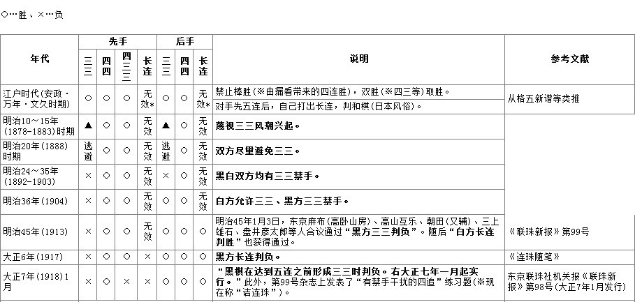
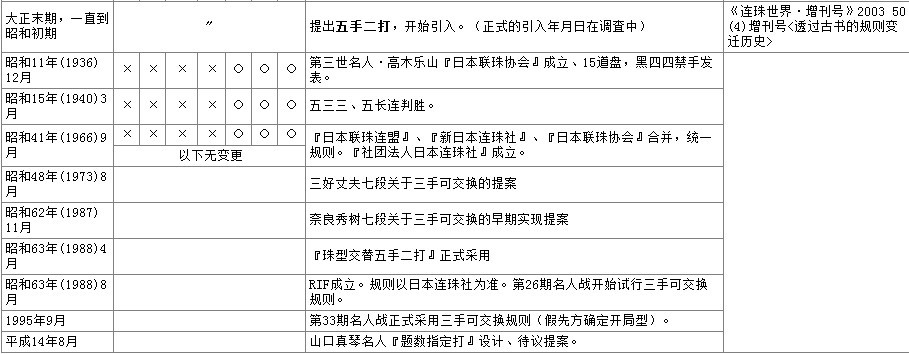

职业连珠规则改革历程
#1 <font color="red">职业连珠规则改革历程</font> 作者：失落刀 发表时间：2011-11-19 19:54:23
职业连珠规则改革进程
五子棋起源于古代中国，发展于日本，风靡于欧洲。大约在我国南北朝时期随围棋一起先后传入朝鲜、日本等地。据日本史料文献介绍，中国古代的五子棋是经由高丽(朝鲜半岛)，于1688年至1704年的日本元禄时代传到日本的。1856年，《五石定式集》出版，随后各种五子棋的书籍纷纷出现，各种流派在日本发展起来。日本《万朝报》于明治32年(公元1899年)9月连载了社长黑岩泪香(Ruikou
Kuroiwa，后成为日本第一代名人)所写的《五目碰必胜法》，引起很大反响。执黑必胜使五子棋失去了比赛和研究的意义，五子棋规则改革提上了日程。黑岩泪香对将五子棋称为“五目碰”的这种含轻视的称谓表示遗憾。同年12月6日《万朝报》经过公开征名，“联珠”这一名称才被正式确定下来，取意于《汉书·律历志》中的一句“日月如合璧，五星如联珠”，现写作“連珠”。以后经过了不断的改良，使五子棋这一简单的游戏复杂化、规范化，而最终成为今天的职业连珠五子棋。主要的规则变化有：
1899年在大坂、东京、北陆（富山县和石川县）等地出现的高手举行了与其他流派的比赛。比赛规则里有黑白双方禁止走“三三”，从此五子棋里出现了“禁手”的概念。
1903年提出了按珠形分为桂、间、连的21种开局，并规定只禁止黑方走“三三”、白子自由走。
1912年规定，黑方被迫走“双三”亦算输；
1916年规定，黑方不许走“长连”；
1918年规定，黑方不许走“四、三、三”；
1931年规定，黑方不许走“双四”，并规定将19×19的围棋盘改为15×15的连珠专用棋盘。
1960年正式将十九道盘改为十五道盘。


※关于双活三禁手的争论省略。
※1907年已有四三三禁手的资料已经确认，正在继续调查中。
上世纪初五子棋传入欧洲并迅速风靡全欧。1988年8月8日国际连珠联盟(RIF)成立，标志着职业连珠正式成为一种国际比赛棋种。
1988年8月14-16日举行的第26期全日本连珠名人战挑战者决定赛，首先试验采用开局三手可交换，共试验了7年，至1995年第五届世锦赛和第33期名人战才正式采用假先方确定开局型，三手可交换规则。
随着时间的推移，人们发现了自由开局黑棋先行的必胜性，因此，规则的修改大多数是针对黑棋的限制，使棋局更趋向于平衡。三手可交换规则迫使人们放弃了一些一方必胜的开局，如浦月局、花月局、云月局、雨月局、彗星局、游星局等。而五手两打规则的施行，又使某些开局重新被人们加以研究。现行指定开局、三手可交换、五手两打规则的结合，使棋手在开局选择和研究方向上，趋向于寻求强4手下最多有一个必胜的强5点，或至少有两个不败5的那些三手开局。
近年来计算机技术突飞猛进，电脑分析棋局的深入，使可用开局越来越少，出现了“连珠理论浅显，变化少”、“连珠无发展前途”等错误观点，甚至出现了“终结”者，但大多数人要求连珠规则改革的呼声越来越高。
进入21世纪，在欧洲，规则改革已经快步进入了试验阶段，而国内棋友仍在呼吁开放26种开局的限制，解放“天元点”的束缚。
2005年8月RIF会员大会报告中，RIF决定于2005年12月31日前在RIF规则委员会的专题论坛中收集连珠开局规则的提案，共收到提案30项。
/*760*90，创建于2012-2-9*/ var cpro_id = 'u761865';
#2 Re:职业连珠规则改革历程 作者：失落刀 发表时间：2011-11-19 20:03:03
版主可以在论坛发表的其他规则里面选择整理一些出来，分别给予编号（31--N）
然后大家好讨论。
#3 Re:职业连珠规则改革历程 作者：失落刀 发表时间：2011-11-19 20:11:40

［此帖子已被 失落刀 在 2011-11-19 21:35:37 编辑过］
#4 Re:职业连珠规则改革历程 作者：失落刀 发表时间：2011-11-19 20:17:27
最早的开局概念是什么？
什么时候限制大桂马开局的？
什么时候约定开局为26种的？
请解惑。
sosos(81257054) 20:12:44
历史这玩意
没有记录的
连回顾自己都不靠谱